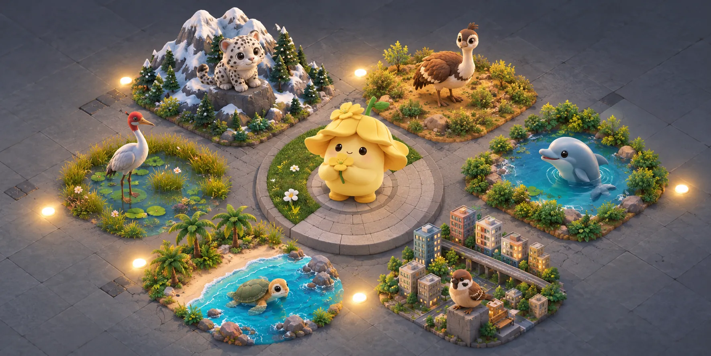
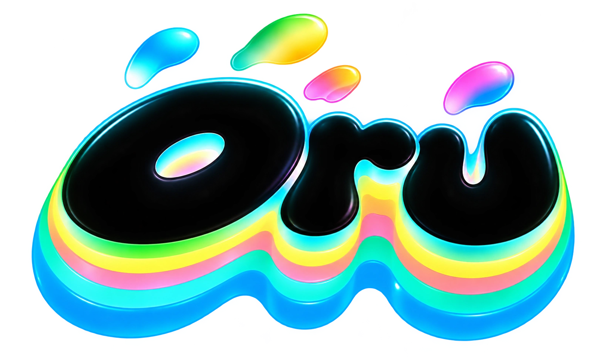

Interactive design preview · Sample neighbourhood and progress · No account data is sent
Only record an action after you have actually done it. This preview demonstrates the flow; it does not submit evidence or award credits.